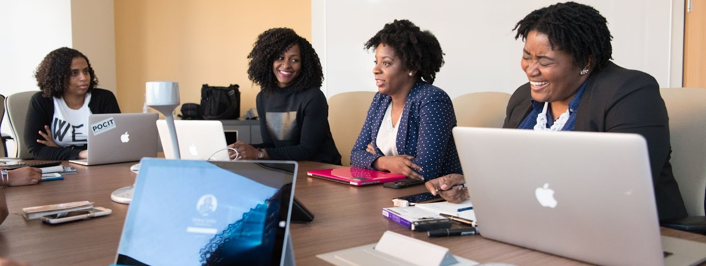
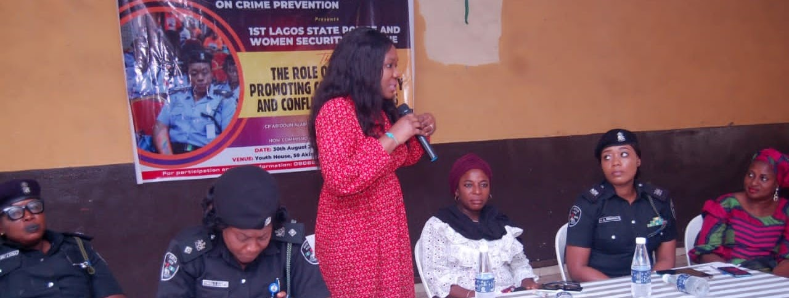
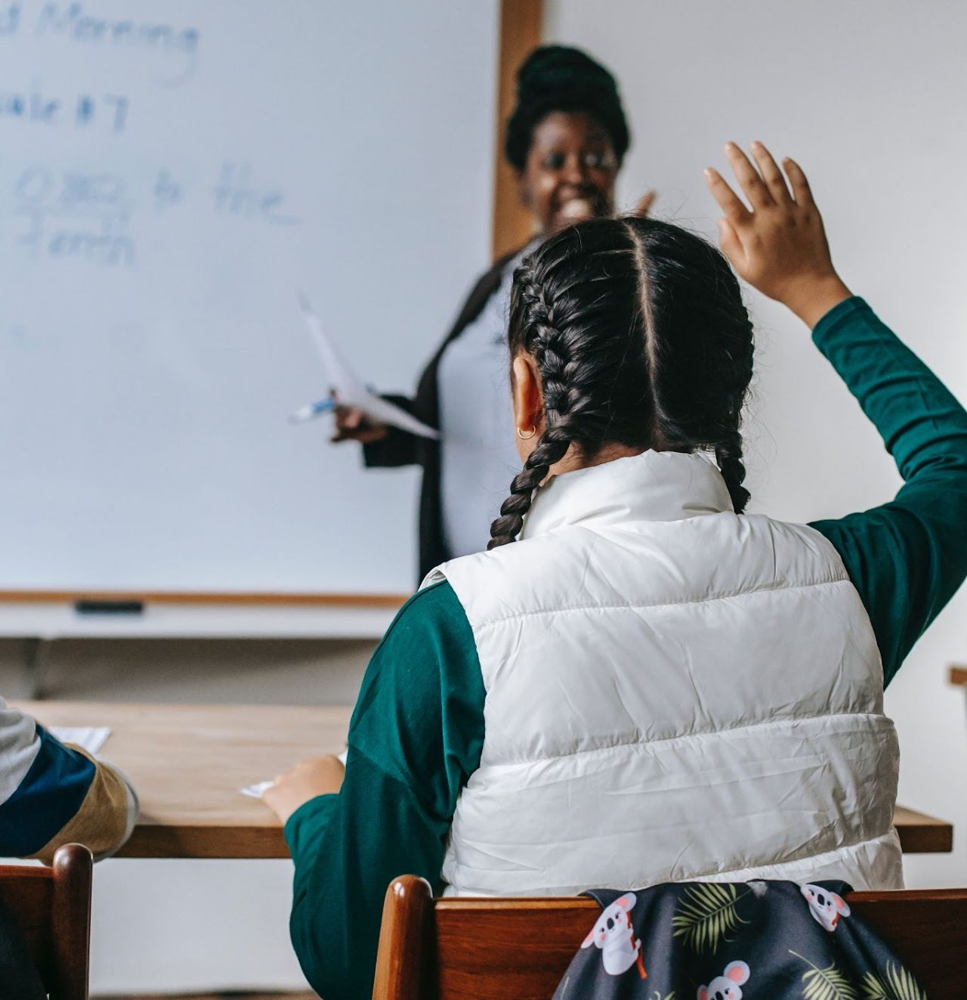
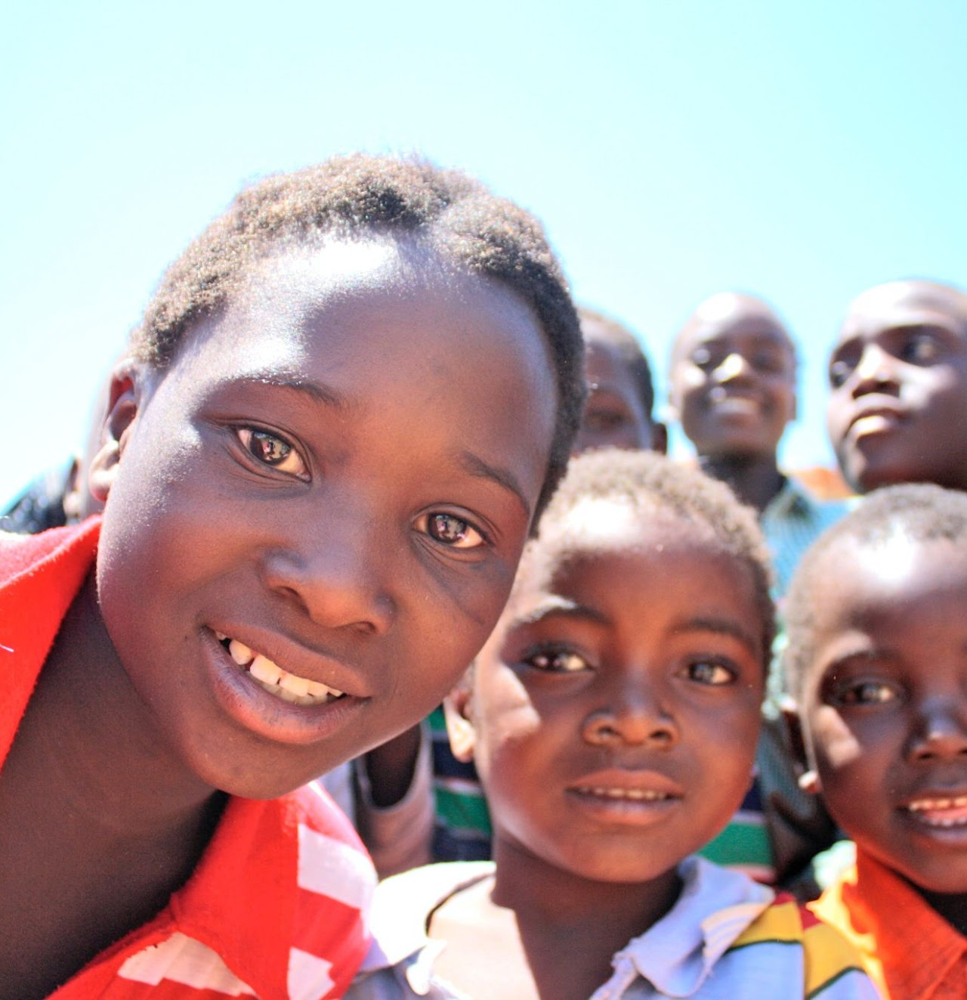

About WISPAD

WISPAD Network is a brainchild of Impact Her World Foundation (IHWF), an organization focused on promoting the interest and wellbeing of women and girls in Nigeria and Africa. The network is committed to advance the role and recognition of women and other under-represented groups working in the security, peacebuilding, mediation and preventive diplomacy sector.
Launched in 2022, the network is a conscious attempt to promote the Women, Peace and Security Agenda in Nigeria.
WISPAD SUB-GROUPS
Our programming includes setting up of WISPAD sub-groups led by expert members of our Working Group, zonal and state chapters, professional development programs, fellowships and study visits, grassroot mobilization and training of local women, networking meet-ups, awards recognition programs, career mentorship , resource publications, spotlights, conferences, workshops, and more!

WISPAD ADVOCACY GROUP (WAG)
WAG is targeted at promoting the activities of the network through the media and other communication channels, press releases, engagement of policy makers and campaigns.
WISPAD RESEARCH GROUP
WIRE Group is targeted at closing the data gap on WPS issues in Nigeria. This includes publication of WISPAD Security and Peace Index.

WISPAD DEVELOPMENT GROUP
WIDE Group is targeted at building the capacity of individual members and NGOs on different areas of the networks focus to enable proper grassroot delivery of the WPS in Nigeria.

WISPAD HUMANITARIAN GROUP
WISH Group is targeted at providing first responses to women and children during internal crisis, conflicts and natural disasters like flooding to ensure protection and safety.
WISPAD DEVELOPMENT GROUP
WIDE Group is targeted at building the capacity of individual members and NGOs on different areas of the networks focus to enable proper grassroot delivery of the WPS in Nigeria.
WISPAD DEVELOPMENT GROUP
WIDE Group is targeted at building the capacity of individual members and NGOs on different areas of the networks focus to enable proper grassroot delivery of the WPS in Nigeria.
WISPAD MISSION
We are committed to improving the role of women in conflict prevention and peace building by developing a women peace, security and diplomacy network to support achievement of the Women, Peace, and Security Agenda in Nigeria.